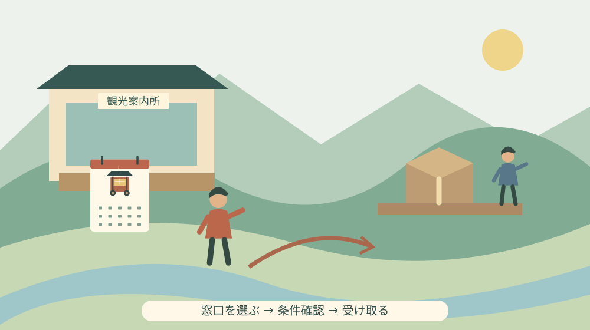

森のまつりカレンダー｜販売場所と発送の確認
Q. 森のまつりカレンダーは、どこで買えて町外へ送ってもらえる？
森のまつりカレンダーは1冊1,500円（税込）。平日8時30分〜17時15分は観光協会事務局、土日祝9〜16時は遠州森駅観光案内所が販売窓口です。遠方への発送は観光協会0538-85-6316へ電話で相談します。数量限定で、対象年・送料・決済方法は購入前に確認してください。
カレンダーを届ける仕事にも、祭りの外側がある
祭りを写したカレンダーが手元に届くまでには、掲載内容を整え、印刷物を受け取り、販売先へ運び、問い合わせに答える仕事があります。写真の華やかさだけでは見えない手間です。森町の祭りを伝える人の負担を軽く見ずに、買う側が窓口と時間を確かめて出かけるところから考えます。
大石浩之（磐田市／不動産業）です。私は、地域の品物を買う話でも「どこで、いつ、誰が受け取るか」まで書きたいと思います。町外の家族へ贈る場合には、価格だけ分かっても段取りは終わりません。今回は森のまつりカレンダーの購入先と発送確認を、2026年10月3日時点の案内から整理します。
森町観光協会の販売案内は2026年10月2日付です。本文には販売場所、税込価格、発送への対応、問い合わせ先が掲載されています。一方で、何年分のカレンダーか、送料はいくらか、どの方法で支払うかは確認できませんでした。分かることと、買う前に尋ねることを分けます。
この記事は祭り当日の開催案内や交通規制を扱うものではありません。カレンダーを買う日と祭りを見に行く日は別の予定です。自宅で使うのか、離れて暮らす家族へ届けるのかによって、確認する順序も変わります。まず用途と受取り方法を決めると、必要な質問が絞れます。
販売場所は、平日と土日祝で分かれている
森町観光協会「森のまつりカレンダーの販売について」によると、平日の窓口は観光協会事務局です。場所は森町役場町民生活センター内、販売時間は8時30分〜17時15分と案内されています。役場の建物へ向かう予定を立てるなら、まず自分が行ける日が平日か確認してください。
土日祝日の販売窓口は、遠州森駅観光案内所です。案内に記された時間は9時〜16時です。10月3日は土曜日なので、曜日に対応する窓口はこちらになります。ただし、案内の掲載をもって当日の在庫や臨時の変更まで保証できるわけではありません。遠方から出かける場合は確認しておく方が確実です。
見落としやすいのは、平日の閉まる時刻を休日にも当てはめることです。休日の案内は16時までで、17時15分ではありません。仕事帰りや別の用事の後に寄るなら、到着時刻をこの時間へ合わせます。「同じ観光協会だからいつも同じ場所と時間」と覚えると、窓口を取り違えます。
販売窓口が二つあることは、同じ日の同じ時間に両方で買えるという意味ではありません。家族に購入を頼むときは「森町で買ってきて」だけでなく、曜日に合う場所と販売時間を一緒に渡すと行き違いを減らせます。相手が動ける時間を先に聞き、その日に合う窓口を選ぶ形にします。
1冊1,500円。贈り物の予算は送料と分ける
公式の販売価格は1冊1,500円（税込）です。自宅用1冊と家族への贈り物1冊を買うなら、品物の代金は合計3,000円になります。これは単価に冊数を掛けた計算で、送料や包装などの費用を含めていません。発送を希望する場合の総額は、購入方法を確認してから決めます。
私は予算を考えるとき、カレンダーの代金と移動費を別に書く方がよいと考えます。購入のためだけに往復するのか、森町の別の用事と合わせるのかで負担が変わるからです。町外へ送る場合も、自分で買って送る方法と、観光協会へ発送を相談する方法を比較する材料になります。
現行の案内には数量限定で、なくなり次第販売終了と明記されています。ただし残部数は示されていません。「まだ十分ある」「もう残りわずか」と本文にない在庫状態を補うことはできません。希望冊数が決まった段階で販売状況を尋ねれば、無駄な移動や追加の買い直しを避けやすくなります。
購入を頼まれた人が立て替えるなら、何冊まで買うかと、送料が必要な場合の確認方法を決めておきます。贈り先を増やす判断を現地で一人に任せると、予定した金額から変わることがあります。これは観光協会の規定ではなく、家族間の段取りの提案です。冊数を一行残すだけでも役立ちます。
発送は電話で相談する。送れることと条件確定は別
森町観光協会の販売案内は、遠方への発送にも対応すると記し、電話での問い合わせを案内しています。問い合わせ番号は0538-85-6316です。インターネットから配送先と支払いを入力して購入できる販売ページが、この案内に示されているわけではありません。発送を希望する人は電話で条件を確かめます。
電話の前に、希望冊数と届け先の都道府県、市区町村を控えておくと話を進めやすくなります。送料を聞く段階でどこまでの住所が必要かは、窓口の案内に従います。公開のコメント欄などへ家族の住所を書き込まず、案内された方法で配送先を伝えてください。
確認したいのは、送料を含む総額、支払方法、発送までの目安、複数の住所へ送れるかです。贈り物なら、差出人をどう表示するか、贈り先へ代金の分かる書類が入るかも必要に応じて尋ねます。これらは対応を保証する事項ではなく、本文に記載がないため確認したい項目です。
遠方発送に対応していても、希望する日に必ず届くとは限りません。誕生日や帰省日に合わせたい人は、到着希望日を伝え、間に合う方法があるかを確認します。返事を聞く前に家族へ到着日を約束しない方が、販売する人へ急な調整を求めずに済みます。予定には余裕を残します。
私は、問い合わせの電話を長い相談にしない工夫もできると考えます。質問を紙にまとめ、回答を書き留めれば、同じ内容で何度もかけ直す手間が減ります。担当者の説明を聞き取れなかったときはその場で確かめます。買う側の準備は、窓口で対応する人の負担を減らす行動にもなります。
対象年や大きさは、贈る前に確かめる
今回の販売案内本文には、カレンダーの対象年が明記されていません。ページのURLに2026という数字があっても、それだけで2026年用と確定できません。記事投稿日と商品の対象年は別の情報です。家族への贈り物にする場合は、何年分の商品かを電話または販売窓口で確認してください。
大きさや掲示方法についても、本文だけでは分かりません。壁に掛けるつもりなら寸法と形状を確認し、予定した場所へ置けるかを考えます。実物を見られる窓口なら確認しやすい一方、発送では口頭で教えてもらう必要があります。写真の見栄えだけで、家の壁へ収まると判断しない方が安心です。
商品写真や祭りの写真は、内容を知る入口になりますが、掲載画像の全てがカレンダー各月へ使われるとは限りません。収録内容に希望がある人は、販売するカレンダーの実物について質問します。特定の屋台や地区の写真が載っていることを、確認なしに贈り先へ約束しないようにします。
購入後の交換や返品、配送中の破損への対応も、今回確認した本文にはありません。気になる条件は代金を支払う前に尋ねます。一般的な通販の慣行を、この販売へそのまま当てはめることはできません。窓口へ伝えるのは、必要な条件を確かめたいという購入者側の希望です。
良い点｜平日と休日、町内と町外に入口がある
森のまつりカレンダーの案内で私が評価したいのは、平日と休日で販売窓口が明示されていることです。平日に時間を取りにくい人にも、土日祝の購入先が分かります。働く時間や家族の予定が違っても、どの窓口へ行けばよいか比較できる情報は、価格と同じくらい役に立ちます。
遠方発送への対応も、町外に暮らす家族へ届けたい人には助けになります。私は、祭りのある場所から離れていても、暮らしの中で写真を見る機会を持てることに意味を感じます。帰省できる人だけの楽しみにせず、電話で相談できる入口がある点を、具体的な利点として受け止めます。
祭りを地域の暮らしから考えたい人には、森の祭りと地域の生活を扱った記事があります。日々の予定を確認する品物として家で使えば、家族が森町の話を始めるきっかけにもなります。これは使い方の提案で、購入による効果を保証する話ではありません。
注文したい点｜送料と対象年が見えると選びやすい
販売案内に私が望むのは、対象年、送料の考え方、支払方法が見えることです。電話対応があることは助かりますが、購入者が先に判断できれば、窓口へ同じ質問が重なる負担も減らせます。発送を受け付ける人の手間を認めたうえで、定型の情報が一緒に読めるとさらに使いやすいと感じます。
一方で、配送先や冊数によって費用が変わるなら、一律の送料を出せない事情も考えられます。ここは理由を確認していないため、案内の不足だけで運営を評価し切ることはできません。買う側の今日の一歩としては、冊数と届け先を決めてから一度の電話で確認する方法があります。
販売収益の使途や、保存会などへの還元は、今回の案内本文に記載されていません。カレンダー購入をそのまま寄付と同じ意味にすることはできません。私は、応援したい気持ちがあっても、確認していないお金の流れを物語に足すべきではないと考えます。まず商品として内容と代金を確かめます。
文化の継承に関心がある人は、森町の祭りと屋台の伝統を考える記事も参照できます。購入すること、祭りを見に行くこと、準備を手伝うことは違う関わり方です。一つを選んだから別の負担も引き受ける、という話に広げず、自分ができる範囲を選びます。
森町へ買いに行く日の移動を整理する
森町の公式「森町の公共交通について」は、町営バス、地域タクシー、鉄道・民間路線バス・タクシーなどへの案内を分けています。購入窓口までの移動を考える際の入口です。各交通手段の利用条件と運行日は異なるため、町の案内があるだけで自分の時間帯に利用できるとは限りません。
遠州森駅観光案内所で買う予定でも、帰りの列車までの時間を含めて考えます。カレンダーの会計に必要な時間は分からないため、発車直前の短い間に必ず買えるとは見込まない方がよいと私は考えます。車なら駐車できる場所を別に確かめ、周辺の住宅や店の前へ独断で停めないようにします。
祭りを見に行く予定と重ねる場合は、祭りへ行く前の駐車場と交通案内の確認も役立ちます。ただし、カレンダーの販売案内は交通規制を知らせる資料ではありません。訪問日の移動情報を改めて確認し、販売窓口の時間だけで行程を完成させないようにします。
森町の公式「文化財」ページは、舞楽や建造物に加え、森の街並みや史跡も紹介しています。カレンダーから町へ関心が広がったときの調べ先になります。ただし、文化財の紹介ページに名前があることと、自由に入って見学できることは別です。購入ついでの訪問も、公開条件を確認してから考えます。

対案・結論｜今日は曜日に合う販売窓口を一つ確認する
カレンダー購入の今日の一歩は、行ける曜日に合う販売窓口を一つ確認することです。10月3日（土）なら、案内上は遠州森駅観光案内所の9〜16時です。自分の出発地から到着できる時刻を見て、無理な移動になるなら、別の日や発送の相談へ切り替えられます。
町外の家族へ贈るなら、「何冊、誰に、いつ頃までに」を先に決めます。そのうえで観光協会へ発送条件を聞き、商品代と送料を含む金額を確認します。連絡先は0538-85-6316です。家族へ届ける行為を、窓口で何とかしてもらう仕事にせず、自分で決められる部分から整えます。
買うか迷っている場合は、対象年や大きさが分かってから判断して構いません。数量限定という案内は販売条件であって、生活に必要な支出を後回しにして買う理由にはしません。使う場所と贈り先が決まるかを確かめれば、購入後に行き場のない品物を増やすことも避けられます。
家族に残す記録は、注文と受取りをつなぐ
発送を依頼した場合、家族へ残す記録は注文した冊数、支払の状態、送り先、案内された発送目安です。受取りを確認する人を決めておけば、注文した人だけが状況を把握する形を避けられます。住所や電話番号が書かれたメモは、誰でも読める場所へ置かず、必要な人とだけ共有します。
実家に飾るなら、持ち主に置く場所を聞くことも一つの確認です。家の片付けでは、贈った人の思いと使う人の都合が異なる場合があります。私は、祭りへの愛着がある贈り物ほど、受け取る家族の暮らしに収まるかを確かめたい。残す物を増やす前に、使い道を一緒に考える方法があります。
大石の視点｜応援の気持ちを、受け取れる段取りへ変える
私は、町を応援したいという気持ちだけで購入案内を終えたくありません。誰が買いに行き、何時までに着き、誰が受け取るか。この段取りまで整って、品物は家族の暮らしへ入ります。販売する人の善意へ最後の調整を全部預けないことも、地域の仕事を尊重する態度だと考えます。
正直に言えば、家に置くカレンダーが祭りへの関心をどこまで長く保つのか、私には分かりません。買えば文化が守られる、と言い切るつもりもありません。それでも、森町を思い出す具体的な物が日常にあることには可能性を感じます。効果を大きく語るより、使う人へ確実に届くことを大切にしたいです。
祭りの担い手や販売窓口の人を、いつでも頼れる無限の人手として考えない。私はここをはっきりさせたいと思います。町外にいても、決められた時間を守り、質問を整理し、受取りを確認することはできます。大きな改革の話でなくても、今日の一件の買い物で手間を減らす余地はあります。
まとめ｜価格と窓口を確認してから、贈る約束をする
森のまつりカレンダーは1冊1,500円（税込）、数量限定です。平日は観光協会事務局、土日祝は遠州森駅観光案内所という販売窓口の区別を、時間と一緒に確かめてください。遠方発送は電話で相談できますが、送料、決済方法、対象年は掲載本文だけでは分からない項目です。
今日は曜日に合う窓口を一つ選ぶか、発送相談のための冊数を決めるところから始めます。家族へ「届くよ」と伝えるのは条件を確認してからで十分です。祭りを伝える品物と、その品物を用意し届ける人の仕事を、同じ買い物の中で大切にできます。
よくある質問
土曜日に森のまつりカレンダーを買える窓口は？
森町観光協会の2026年10月2日付案内では、土日祝の販売窓口は遠州森駅観光案内所で、時間は9〜16時です。平日の観光協会事務局とは場所と時間が異なります。数量限定で、なくなり次第販売終了です。遠方から行く場合は希望冊数の販売状況と当日の案内を確認してください。
町外の家族へ発送してもらえますか？
森町観光協会は遠方への発送に対応すると案内しています。電話0538-85-6316へ、希望冊数と届け先を伝えて相談します。商品は1冊1,500円（税込）ですが、送料、支払方法、到着日、贈答時の扱いは掲載本文では分かりません。送料込みの総額と発送条件を確認してから依頼してください。
販売されているのは何年のカレンダーですか？
今回確認した販売案内本文には、カレンダーの対象年が明記されていません。記事投稿日やURLにある2026という数字だけでは、商品の対象年を確定できません。購入窓口か森町観光協会へ対象年を確認してください。贈り物なら大きさや収録内容も確かめると、受け取る家族の使い方に合わせられます。
実家や土地の資料を家族で整理する場合は、実家カルテも利用できます。売却未定でも使える本サイト運営会社の民間サービスです。森町や各団体の公式手続ではなく、利用は任意です。
公式情報源
2026年10月3日確認（2026年10月確認）。掲載情報・数値・受付や開催条件は変わる場合があります。行動前に公式の最新案内を確認してください。個別の契約・不動産・税務などの判断は担当窓口や専門家に相談してください。